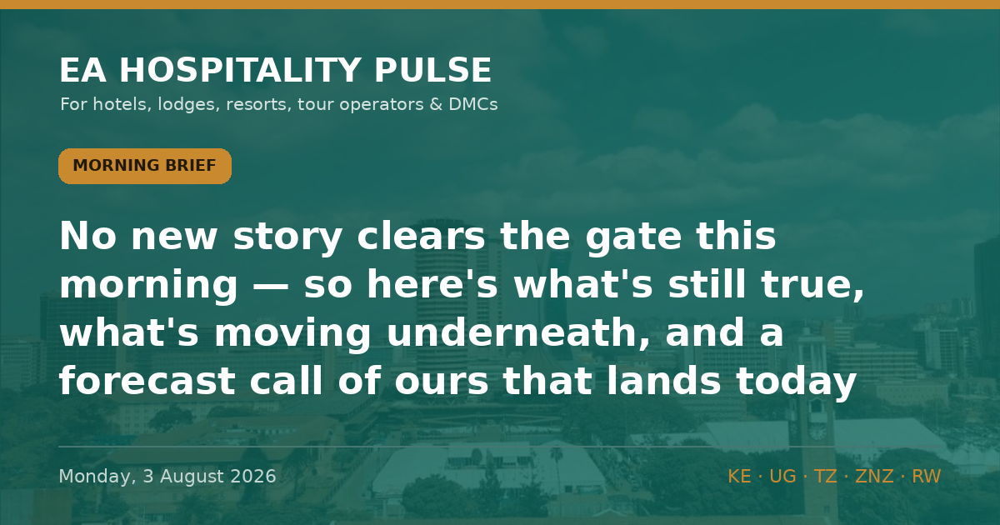

← All editionsNo new story clears the gate this morning — so here's what's still true, what's moving underneath, and a .
No new story clears the gate this morning — so here's what's still true, what's moving underneath, and a forecast call of ours that lands today.
━━━━━━━━━
1️⃣ THE "NEW" KENYA ADVISORY IS A 502-DAY-OLD ARTICLE
On 25 July we predicted the Kenyan press would report the 29 July US advisory re-issue by today. It hasn't. What's recirculating instead is a Citizen Digital piece published 18 March 2025 — its metadata silently re-stamped "modified 2 August 2026" — resurfacing in search as if current. The text is the old advisory. We read the primary page ourselves this morning: travel.state.gov still dates Kenya "March 17, 2025" and still lists Eastleigh & Kibera as Reconsider Travel (Level 3), NOT "Do Not Travel". No outlet has independently covered the re-issue.
🎯 So what: if a guest or agent forwards a scary "new" Kenya warning this week, check the byline date before you reassure or discount. Most of what's circulating is 18 months old.
🏷 City | Kenya | Confirmed
2️⃣ STILL TRUE: KENYA LEVEL 2, BOARD UNCHANGED
The US holds Kenya at Level 2 (Exercise Increased Caution); the UK is unchanged too. Even AI search summaries are now mis-reading the county Do-Not-Travel list onto Eastleigh/Kibera — the primary page does not. Last verified 3 Aug.
🎯 So what: no basis to move rate or security messaging on Kenya this week. Hold.
🏷 All | Kenya | Confirmed
3️⃣ COST PULSE: THE PUMP-PRICE PLANNING WINDOW
EPRA holds Nairobi diesel at KSh 222.86/L and super at KSh 214.03/L through 14 August — but only because the state is propping it (Petroleum Development Levy plus the 8% petroleum VAT rate extended to 14 Oct). KES steady at 129.30/USD; reserves at 6.0 months' cover.
🎯 So what: lock safari-transfer and generator-fuel contracts now, before the 15 Aug EPRA review and the October VAT cliff. This is calm before a likely step-up.
🏷 Bush | Kenya | Confirmed
━━━━━━━━━
• 12 Aug — US CDC §362 Ebola entry order expires; watch renewal and whether Uganda stays listed
• 15 Aug — EPRA fuel review (our calls P025/P028 resolve)
• 19–21 Aug — Hotel Expo Kenya, KICC Nairobi — a city-hotel compression window
🔗 This edition on the web: https://eahospitalitypulse.com/editions/pulse-2026-08-03-morning.html
— EA Hospitality Pulse | Daily intelligence for city, bush & beach properties
📣 Telegram (full editions) 💬 WhatsApp (daily skim) 💼 LinkedIn (the Big Read) 🗂 Every edition